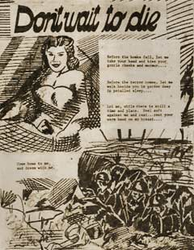

|
j
a v a s c r i p t |
Pg.2/2
March 4, 1942
Striking news from the VoF at 2230: Our bombers raided Subic, sinking three ships of 12,000, 10,000 and 8,000 tons, plus two 100-ton launches and several small craft. It occurred to me that the recent Japanese air activity was an attempt to discover the bases used for the raid. On the Java situation VoF reports sounded contradictory and weak. The Japanese raided Port Darwin in Australia twice. I have five propaganda leaflets the Japanese presumably dropped over Bataan. The first has two pictures: a boy-girl beach scene in the sunset: "Sweet is life"; a dead and mutilated body on the ground: "Horrible is death." The second is a cartoon of a Japanese soldier, sailor, civilian, and presumably a Filipino civilian, attacking mother-bear Roosevelt. The soldier is sticking FDR with his bayonet. A third has two pictures: a drawing of a seductive girl on top; death in the jungles below. Excerpt: "... Feel soft against me and rest ... rest your warm hand on my breast."

Propaganda Leaflet
The fourth is a cartoon calling for "Complete Independence," and the fifth is a four-page pamphlet: "To the American Soldiers!" Excerpt: And, don't deceive yourselves by thinking the Filipinos are with you. These islands belong to them and they are fed up by Roosevelt's false slogans of peace, liberty and democracy. They will stab you in the back (thousands are cooperating with us) and then what pitiful sight you will be ... you, soldiers of Democracy, who are made to believe that you are fighting for the freedom and welfare of the Filipinos. |
|
|
|
|